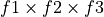

fudge.processing package¶
Subpackages¶
- fudge.processing.deterministic package
- Submodules
- fudge.processing.deterministic.transferMatrices module
EEpMuPDataToString()EEpMuP_TransferMatrix()EEpPDataToString()ELEpP_TransferMatrix()EMuEpPDataToString()ENDFEMuEpP_TransferMatrix()ENDLEMuEpP_TransferMatrix()GBToString()KalbachMannDataToString()KalbachMann_TransferMatrix()LEEpPDataToString()LegendreDataToString()Legendre_TransferMatrix()NBodyPhaseSpace()addTMs()angularToString()commonDataToString()comptonScattering()crossSectionToString()discreteGammaAngularData()doubleDifferential_EEpMuP()energyFunctionToString()executeCommand()fluxToString()multiplicityToString()oneDToString()parseOutputFile()primaryGammaAngularData()threeDListToString()threeDToString()twoBodyTransferMatrix()twoBodyTransferMatrix2()twoDToString()uncorrelated_EMuP_EEpP_TransferMatrix()wholeAtomScattering()
- fudge.processing.deterministic.multiGroupUpScatter module
- Module contents
- fudge.processing.montecarlo package
- fudge.processing.resonances package
- Submodules
- fudge.processing.resonances.getCoulombWavefunctions module
- fudge.processing.resonances.getScatteringMatrices module
- fudge.processing.resonances.reconstructResonances module
- Basic usage:
- Alternate uses:
ChannelDesignatorChannelDesignator.JChannelDesignator.XiChannelDesignator.channelClassChannelDesignator.eliminatedChannelDesignator.externalRMatrixChannelDesignator.gfactChannelDesignator.has_same_J()ChannelDesignator.indexChannelDesignator.isElasticChannelDesignator.is_open()ChannelDesignator.lChannelDesignator.particleAChannelDesignator.particleBChannelDesignator.reactionChannelDesignator.sChannelDesignator.useRelativistic
MLBWcrossSectionRMatrixLimitedcrossSectionRMatrixLimitedcrossSection.eta()RMatrixLimitedcrossSection.getAPByChannel()RMatrixLimitedcrossSection.getChannelConstantsBc()RMatrixLimitedcrossSection.getChannelScatteringRadiiEffective()RMatrixLimitedcrossSection.getChannelScatteringRadiiTrue()RMatrixLimitedcrossSection.getCrossSection()RMatrixLimitedcrossSection.getEiPhis()RMatrixLimitedcrossSection.getL0Matrix()RMatrixLimitedcrossSection.getLMax()RMatrixLimitedcrossSection.getRMatrix()RMatrixLimitedcrossSection.getScatteringMatrixT()RMatrixLimitedcrossSection.isElastic()RMatrixLimitedcrossSection.k_competitive()RMatrixLimitedcrossSection.omega()RMatrixLimitedcrossSection.penetrationFactorByChannel()RMatrixLimitedcrossSection.phiByChannel()RMatrixLimitedcrossSection.resetResonanceParametersByChannel()RMatrixLimitedcrossSection.rho()RMatrixLimitedcrossSection.rhohat()RMatrixLimitedcrossSection.setResonanceParametersByChannel()RMatrixLimitedcrossSection.shiftFactorByChannel()
RRBaseClassRRBaseClass.generateEnergyGrid()RRBaseClass.getAMatrix()RRBaseClass.getAPByChannel()RRBaseClass.getAngularDistribution()RRBaseClass.getAverageQuantities()RRBaseClass.getChannelConstantsBc()RRBaseClass.getEiPhis()RRBaseClass.getKMatrix()RRBaseClass.getL0Matrix()RRBaseClass.getLMax()RRBaseClass.getParticleParities()RRBaseClass.getParticleSpinParities()RRBaseClass.getParticleSpins()RRBaseClass.getPoleStrength()RRBaseClass.getPorterThomasFitToWidths()RRBaseClass.getRMatrix()RRBaseClass.getReducedWidths()RRBaseClass.getScatteringLength()RRBaseClass.getScatteringMatrixT()RRBaseClass.getScatteringMatrixU()RRBaseClass.getTransmissionCoefficients()RRBaseClass.getWMatrix()RRBaseClass.getXMatrix()RRBaseClass.penetrationFactorByChannel()RRBaseClass.phiByChannel()RRBaseClass.resetResonanceParametersByChannel()RRBaseClass.rho()RRBaseClass.rhohat()RRBaseClass.setResonanceParametersByChannel()RRBaseClass.shiftFactorByChannel()RRBaseClass.sortLandJ()
ResonanceReconstructionBaseClassSLBWcrossSectionURRcrossSectionblockwise()getAllowedTotalSpins()getR_S()getResonanceReconstructionClass()invertMatrices()reconstructAngularDistributions()reconstructResonances()spins_equal()
- fudge.processing.resonances.makeUnresolvedProbabilityTables module
ProbabilityTableGeneratorProbabilityTableGenerator.extrapolate_URR_parameters()ProbabilityTableGenerator.generatePDFs()ProbabilityTableGenerator.getLastResolvedResonanceEnergy()ProbabilityTableGenerator.getLastResolvedResonanceRegion()ProbabilityTableGenerator.sampleRR()ProbabilityTableGenerator.truncateResolvedRegion()
heatAndMakePDFs()
- fudge.processing.resonances.setup module
- Module contents
Submodules¶
fudge.processing.miscellaneous module¶
This module contains functions used internally by FUDGE to multi-group 1d functions.
This module contains the following functions:
Class
Description
_toLinear
This function returns an XYs1d linear version of its argument.
_groupFunctionsAndFluxInit
Takes raw transfer matrices and wraps them in a
multiGroupModule.Forminstance._mutualifyGrouping3Data
Reads in a file and returns a
Groupsinstance.groupOneFunctionAndFlux
Reads in a file and returns a
Groupsinstance.groupTwoFunctionsAndFlux
Reads in a file and returns a
Groupsinstance.groupFunctionCrossSectionAndFlux
Reads in a file and returns a
Groupsinstance.
- fudge.processing.miscellaneous.groupFunctionCrossSectionAndFlux(cls, style, tempInfo, f1, printMutualDomainWarning=False)[source]¶
This function multi-groups
 with the product of the cross section in tempInfo.
This function if for internal use.
with the product of the cross section in tempInfo.
This function if for internal use.- Parameters:
cls – The Gridded1d class to return that has the multi-group data.
style – This is the multi-group style for the multi-group data.
tempInfo – This is a dictionary with needed data.
f1 – One of the two functions that represent the product that is multi-grouped.
printMutualDomainWarning – If True, a warning is printed if the domain of
and  are not mutual.
are not mutual.
- Returns:
An instance of cls.
- fudge.processing.miscellaneous.groupOneFunctionAndFlux(style, tempInfo, f1, styleFilter=None)[source]¶
This function mulit-groups
. This function if for internal use.- Parameters:
style – This is the multi-group style for the multi-group data.
tempInfo – This is a dictionary with needed data.
f1 – The function that to multi-grouped.
styleFilter – See method findFormMatchingDerivedStyle of the class Style.
- Returns:
A list like object of the multi-group values.
- fudge.processing.miscellaneous.groupThreeFunctionsAndFlux(style, tempInfo, f1, f2, f3, norm=None, printMutualDomainWarning=False)[source]¶
This function mulit-groups the product of three functions,

. This function if for internal use.- Parameters:
style – This is the multi-group style for the multi-group data.
tempInfo – This is a dictionary with needed data.
f1 – One of the three functions that represent the product that is multi-grouped.
f2 – One of the three functions that represent the product that is multi-grouped.
f3 – One of the three functions that represent the product that is multi-grouped.
norm – A normalization to divided the multi-groups by.
printMutualDomainWarning – If True, a warning is printed if the domain of
and are not mutual.
- Returns:
A list like object of the multi-group values.
- fudge.processing.miscellaneous.groupTwoFunctionsAndFlux(style, tempInfo, f1, f2, norm=None, printMutualDomainWarning=False)[source]¶
This function mulit-groups the product of two functions,
 . Typically, is a cross section.
This function if for internal use.
. Typically, is a cross section.
This function if for internal use.- Parameters:
style – This is the multi-group style for the multi-group data.
tempInfo – This is a dictionary with needed data.
f1 – One of the two functions that represent the product this is multi-grouped.
f2 – One of the two functions that represent the product this is multi-grouped.
norm – A normalization to divided the multi-groups by.
printMutualDomainWarning – If True, a warning is printed if the domain of
and are not mutual.
- Returns:
A list like object of the multi-group values.